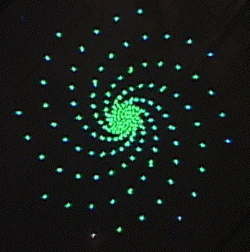
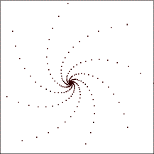

| Here is the videofeedback image we wish to synthesize by IFS. |
|  |
| We measure the distance from the distance from the center of the spiral to the center of the tape, obtaining 5.5 cm. |
| Next we measure the distance from the center of the spiral to the center of the image of tape, obtaining 5.4 cm. |
| The scaling factor for this spiral is 5.4/5.5 = .98. |
| Between the two segments used in measuring disance we measure an angle of 46 deg. |
| To test with the random IFS program, for instance, we use these rules, obtaining this picture. |
| r | s | theta |
phi | e | f |
| .98 | .98 | 46 |
46 | 0 | 0 |
| 0 | 0 | 0 |
0 | 1 | 0 |
|
 | |